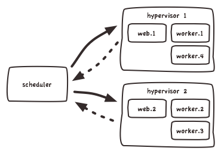
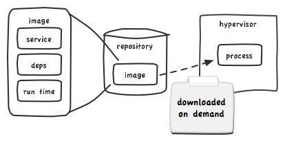
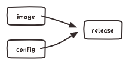
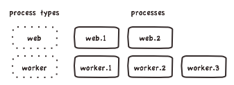

The model is quite simple and flexible: Process types are declared, code is built into an image and combined with configuration to form a release. From this release processes are created and Gilliam will make sure that they keep running.
Services (internally called "apps", of course) is the thing that you as a developer build and deploy. Normally it exposes some kind of interface or API that other parties or clients can use to communicate with the service. In turn, it may talk to other services and attached resources such as database or queues.
In micro service architectures a service is really small and perform a single task.
The builder is responsible for taking code and bundling it with its dependencies and run-time into an image.
When the gilliam deploy command is issued the
complete source tree of the service will be tar:ed up and sent
to the builder, which will feed it into a buildpack. Its up to
the buildpack to gather dependencies and prepare the image.
When done, the whole thing is assembled into an image and a
new release is created for the service.
Gilliams architecture do not require a special build server,
but the builder is a convenient way of creating images and
releasing them. One can envision other ways of getting code
into a release; git push or maybe a Jenkins
job.
Borrowing from Heroku, the Procfile defines what
you want to run in your service. The file contains process
types, which is declarations of commands that will execute when
a process of that type is started. The procfile is a YAML file that
lives in the root of your service:
web: python web.py
worker: python worker.pyProcesses run in resource constrained, isolated, ephemeral environments provided by the hypervisor. If processes need to share state it should be done outside of the container, like in a database or a cache.
For local development a number of tools exist to launch processes from a procfile. The most known one is probably Foreman.
The scheduler is the heart of Gilliam. It is the component that is make sure that the desired number of processes are running for your services. It constantly talks to the hypervisors and monitor their state.
Processes are currently spread in a random fashion over all hypervisors.
The scheduler provides a simple RESTful API to manage
services, releases and processes. This is the API that the
client uses when you issue config
or scale commands.
Simple in its design, the scheduler is completely agnostic to image formats and virtualization techniques. The image format is defined by a contract between the build processes and the hypervisor.
A service is processed and bundled with its run-time and dependencies into an immutable image. This image can later be deployed to hypervisors and will act as the environment for the processes. The same image will be used for all stages, from testing to production.
Images are stored in some kind of repository. It can be Amazon S3 or something else that can serve content using HTTP. Currently the builder provides repository functionality. The image will be downloaded to the hypervisor when a process is created. To speed up consecutive launches, images are cached.
This is the component that puts your image into some kind of container, in our case LXC, and start a process in it.
It is the hypervisors job to monitor spawned processes and report state back to the scheduler. It is also responsible for providing the functionality of the platform that resides outside of the container, like logging.
To minimize differences between testing and production environments the same software image is used for all stages. But the service will most likely need some configuration that will not always be the same, like database credentials or pointers to external resources.
Configuration is controlled using the gilliam
command-line client:
$ gilliam config POOL_SIZE=32
v13 released
Following the 12 factor methodology, configuration is passed to the process in environment variables.
Currently Gilliam do not have any specific functionality for supporting auxiliary services like databases, queues or caches. This is something that is planned for the future, but lets get the basics in place first.
A release is the combination of code and configuration, and it is the thing that is actually deployed. A new release is created every time new code is pushed or when configuration is changed.
By being the deployable unit, it is on a release that you set scale factors. This means that it is possible to have multiple releases deployed at the same time, allowing partial and gradiual roll out of changes.
Scale factors are set on a release and will instruct the scheduler to try to make sure that the specified number of processes for each type is always running.
